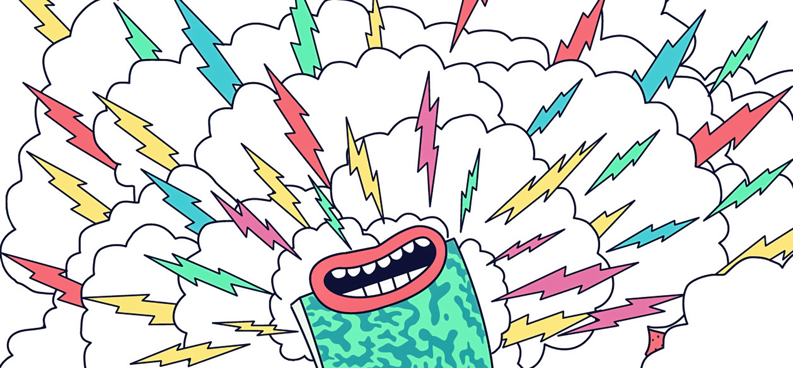
BOGOTÁ. CO
(2016)
ESTÉREO PICNIC 16
Festival Estéreo Picnic is the biggest music festival in Colombia. In its 7th edition, the visual communication was focused on the idea that the Festival is an experience that goes beyond music itself. With attractive and cutting-edge communication, we tried to generate a sense of belonging in its attendants and cultivate new audiences.
“Festival Estéreo Picnic is created and experienced by its assistants. These unique characters are the true creators of the physical and emotional adventures that occur in the Festival. They redimension the festival space, they make music become timeless. We told the story of these people, the crazy citizens of an unnamed city that fought fiercely until the music was restored, overturning the crazy silent regime of the city’s dictator. Utilizing different graphic media like comic strips, lineup animated video, animated gifs, four edition silkscreens, t-shirts, and pins, this year’s communication became one of the most important and remembered ad’s in the Festival history, winning the Premio Lapiz de Acero, the most important design award in Colombia.”
“Festival Estéreo Picnic is created and experienced by its assistants. These unique characters are the true creators of the physical and emotional adventures that occur in the Festival. They redimension the festival space, they make music become timeless. We told the story of these people, the crazy citizens of an unnamed city that fought fiercely until the music was restored, overturning the crazy silent regime of the city’s dictator. Utilizing different graphic media like comic strips, lineup animated video, animated gifs, four edition silkscreens, t-shirts, and pins, this year’s communication became one of the most important and remembered ad’s in the Festival history, winning the Premio Lapiz de Acero, the most important design award in Colombia.”
CLIENT: PÁRAMO PRESENTA / AGENCY: MILAGROS
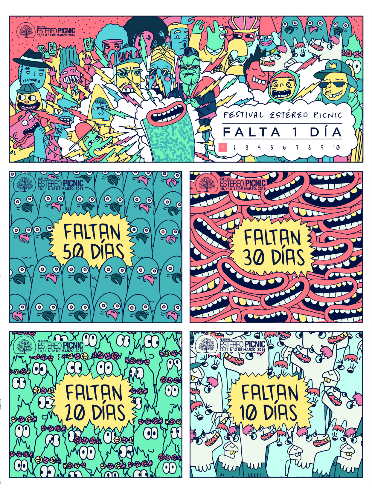
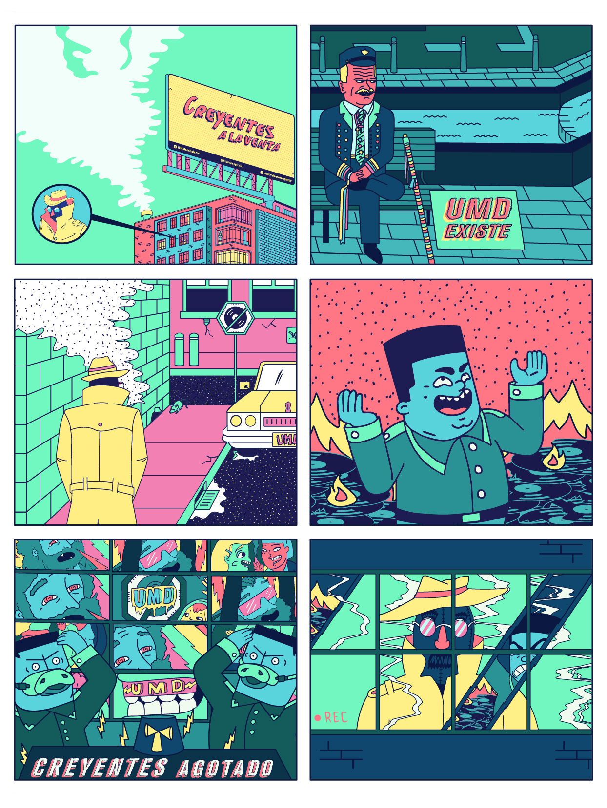
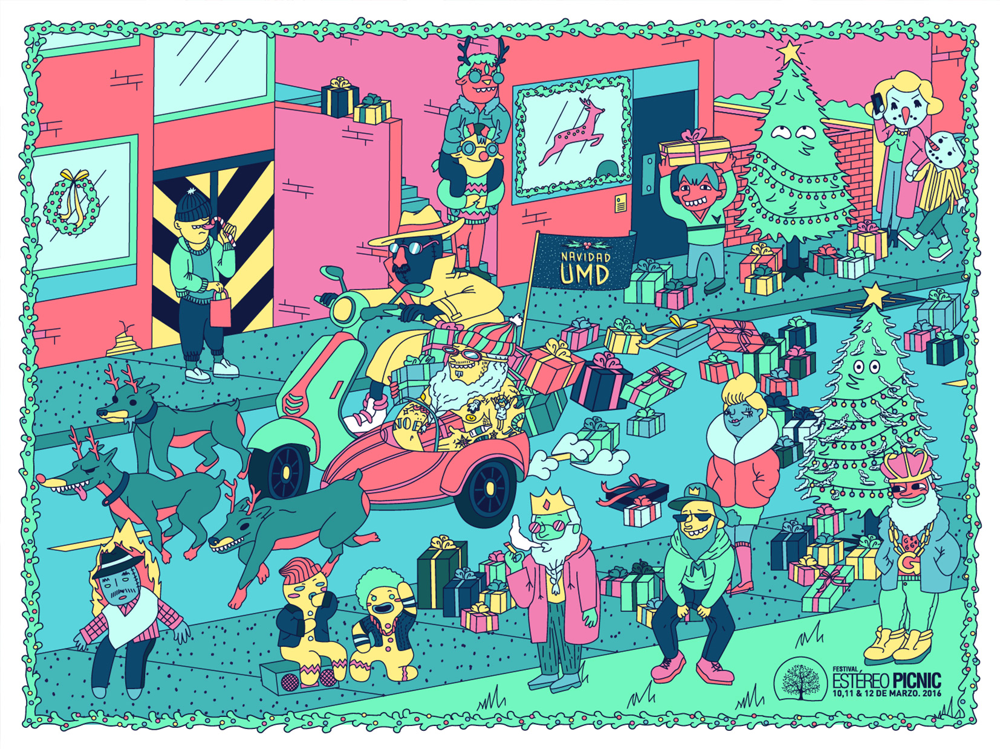
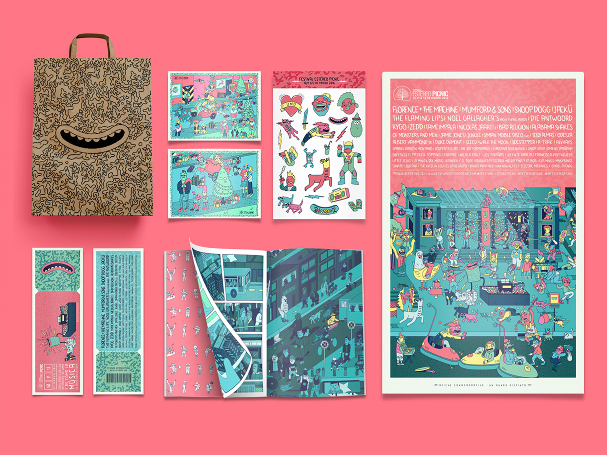
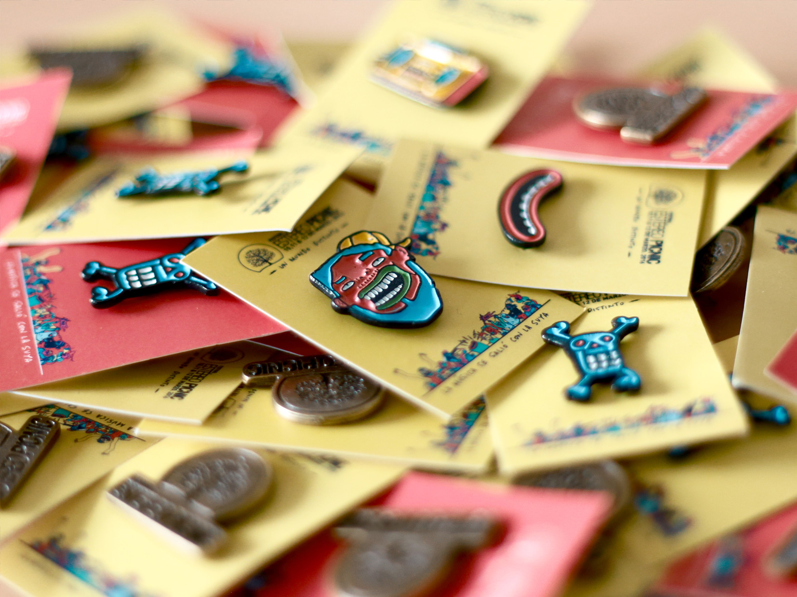
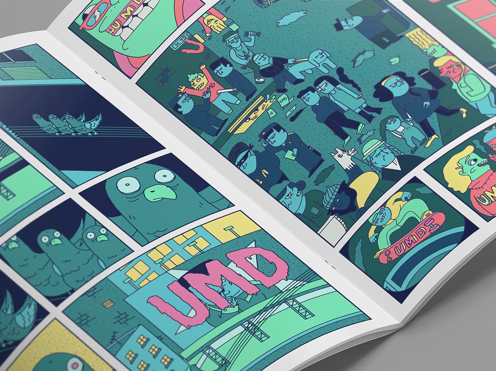
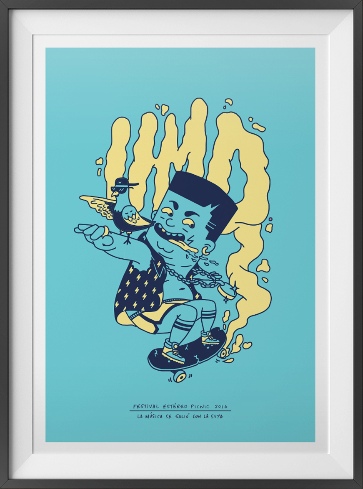
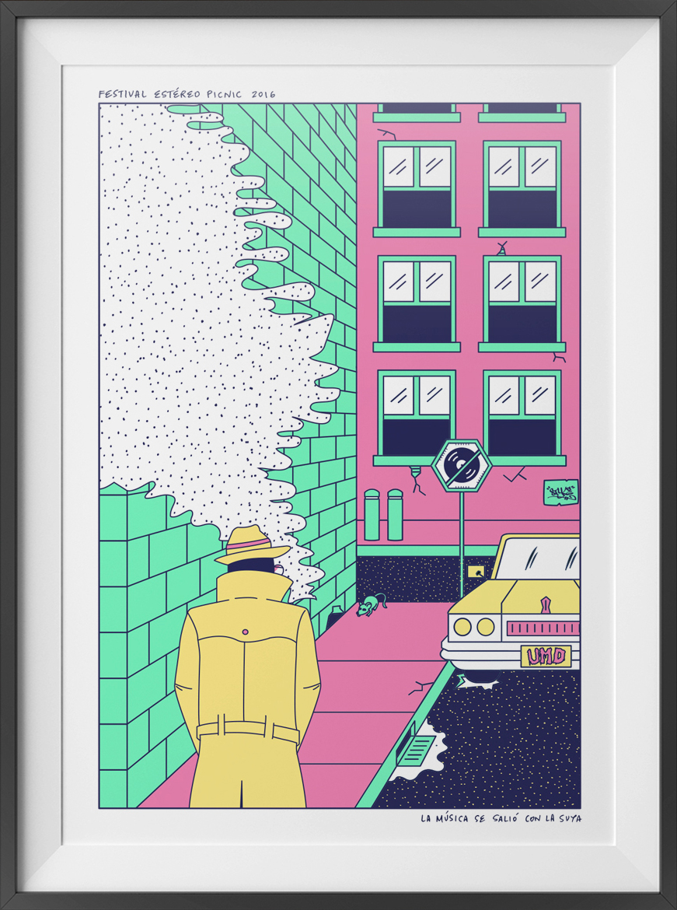
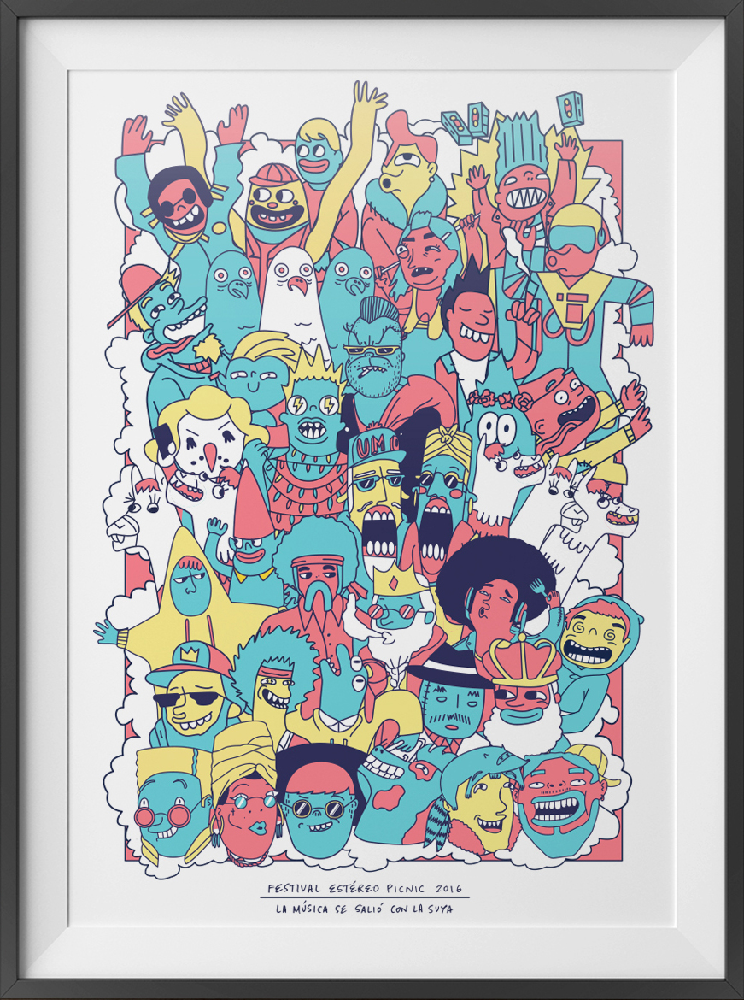
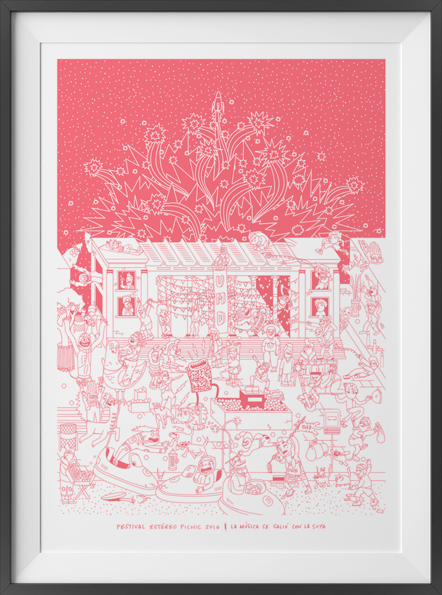
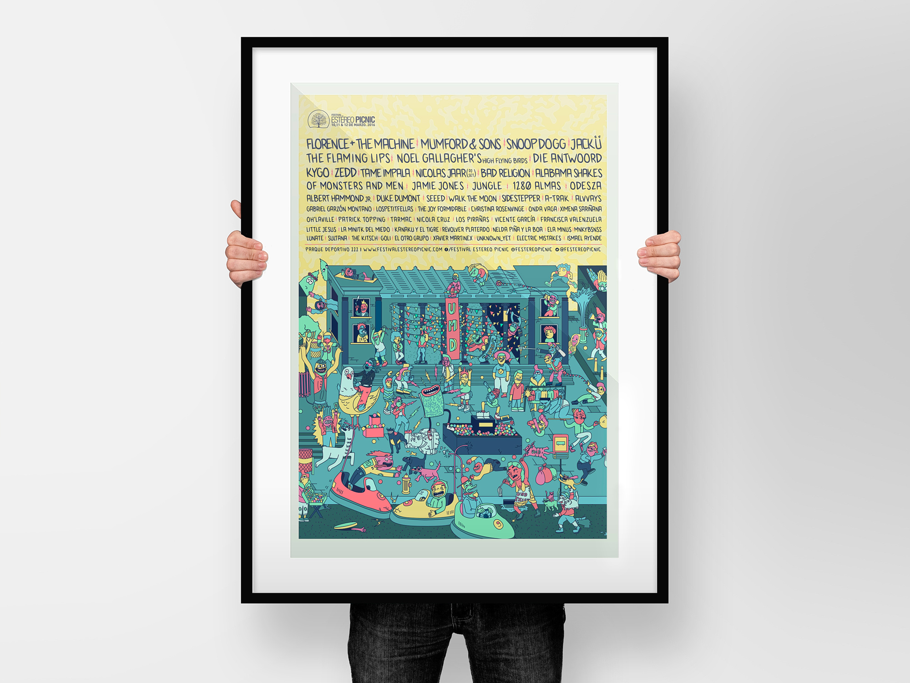
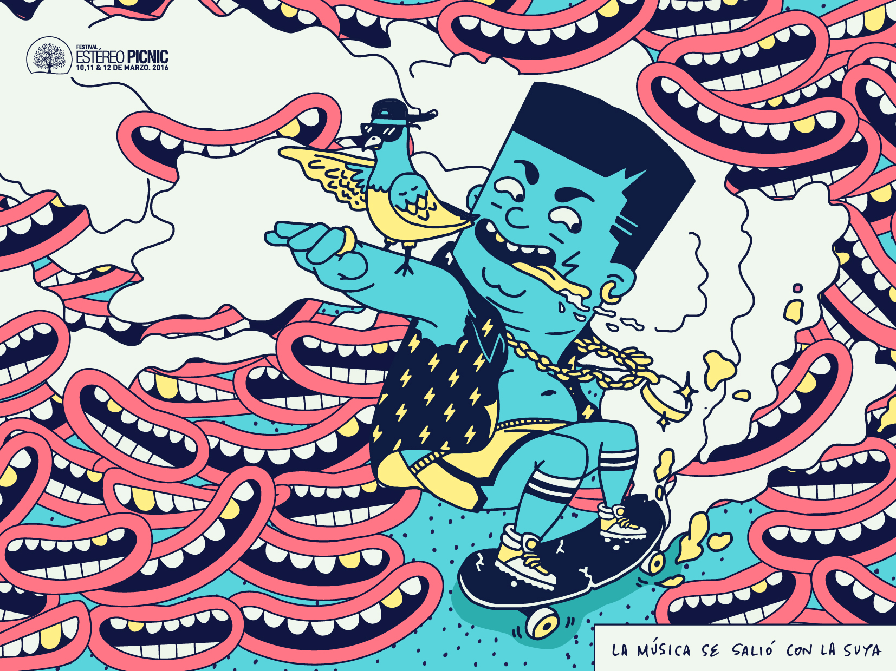
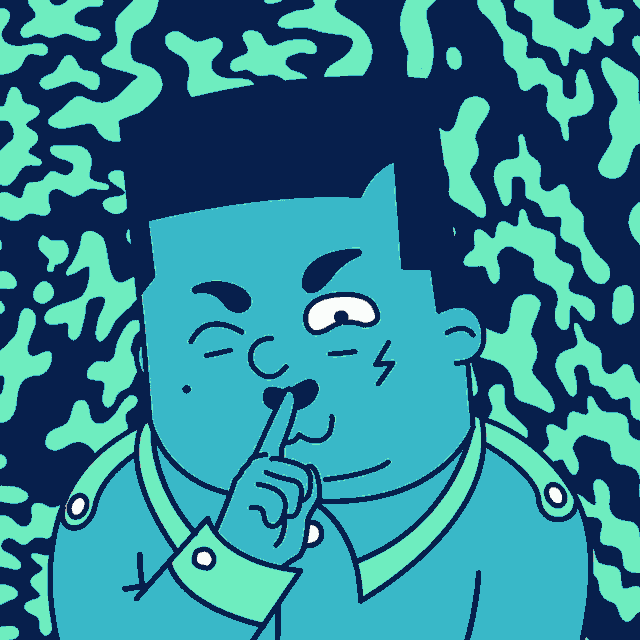
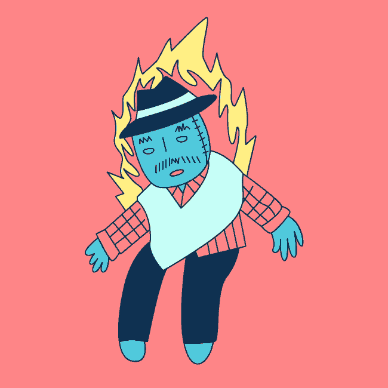
Creative Direction: Pablo Salazar, Max Ledher, Juan David Figueroa, Francisco Quinche, Lina Barrios, Lukas Vergel Art Direction: Juan David Figueroa, Francisco Quinche, Lina Barrios Illustration: Francisco Quinche, Juan Daniel Velasquez Video Production & Animation: Diptongo Animation: Maria Alejandra Monroy Silkscreens: Diantres